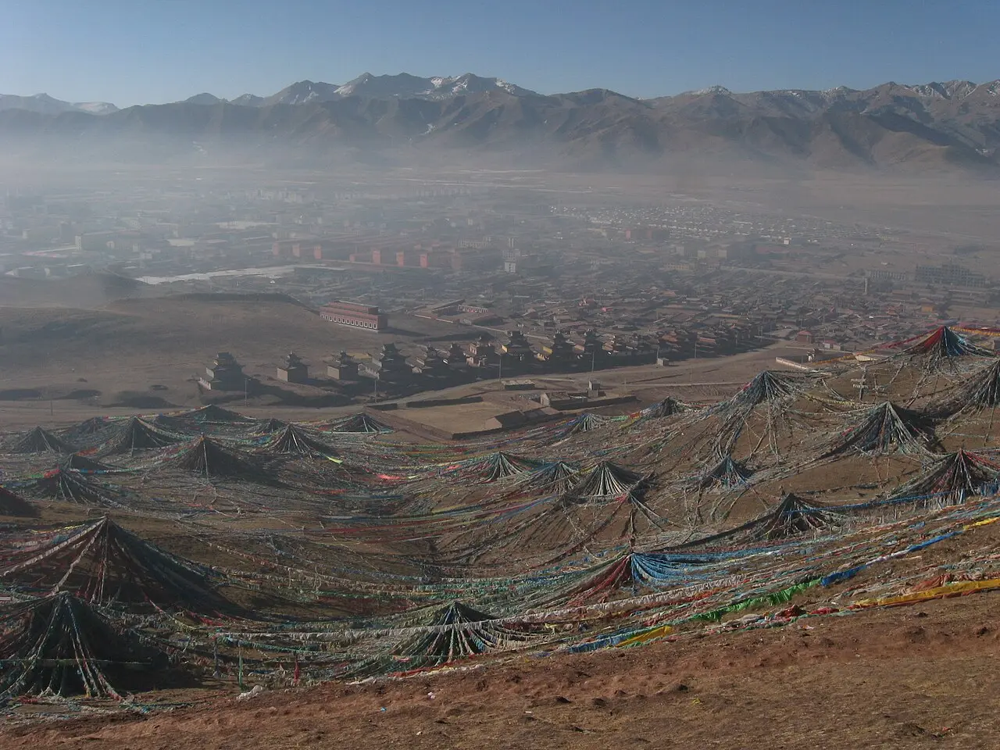
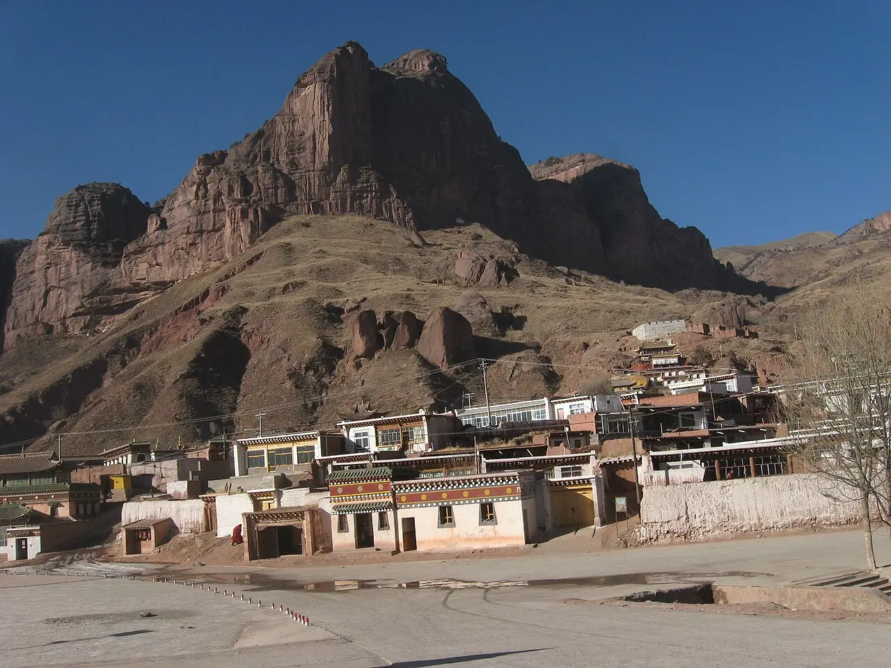
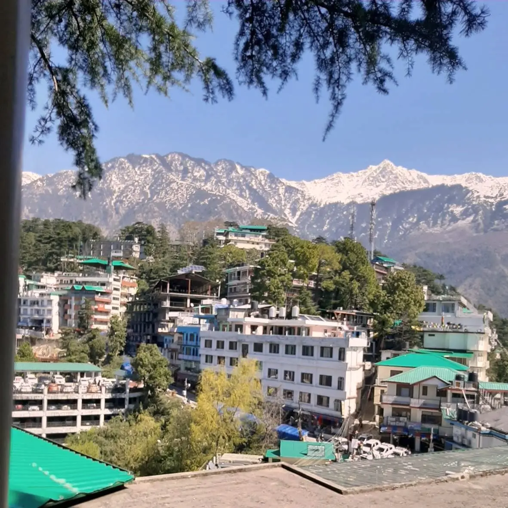

Tibet: schools, faith and who chooses the next Dalai Lama
UN experts say about a million Tibetan children are in state boarding schools; China says they serve children in remote areas. Exile officials report school closures, a five-year sentence for prayers and demolitions at a monastery in recent weeks. Beijing insists it must approve the next Dalai Lama.
UN experts say about a million Tibetan children are in state boarding schools taught in Mandarin; China says the schools serve remote areas.
UN NewsExile officials report school closures, a five-year sentence for prayers and monastery demolitions in recent months; China has not commented.
Central Tibetan AdministrationThe Dalai Lama, now 91, says his own trust will name his successor; Beijing says it must approve.
The Week / PTI · TIME File photo · 1987
File photo · 1987i

The story
UN experts say about a million Tibetan children are in state boarding schools, with little study of Tibetan language or culture.
More detail and sources
In February 2023 three UN independent experts said about a million Tibetan children had been placed in government-run boarding schools, taught in Mandarin with no substantive study of Tibetan language, history or culture. They called it "a mandatory large-scale programme" and a policy of forced assimilation, and said rural schools in Tibetan areas were being closed. UN News

File photo · 2013i

Exile officials report that three Tibetan schools in Golog were closed in August and September; this could not be independently verified.
More detail and sources
The Central Tibetan Administration, the exile government in Dharamshala, reported on 17 October 2026 that three Tibetan schools in Machen County, Golog, were closed in August and September: an orphan school with over 300 children, a girls' school with about 800 students, and a village school whose roughly 300 pupils were sent to state boarding schools. It cites unnamed sources; the reports could not be independently verified. Central Tibetan Administration

File photo · 2013i

A former abbot was reportedly sentenced to five years for long-life prayers for the Dalai Lama.
More detail and sources
The same office reports that Khensur Lobsang Tenpa, a former abbot of Ragya monastery in Golog, was detained on 5 July 2026, the eve of the Dalai Lama's 91st birthday, and later sentenced to five years, reportedly for performing long-life prayers for him; the charges and court have not been made public. On 27 October it reported, citing Radio Free Asia, that more than 200 monks' homes at Dza Sershul monastery were being demolished; it says the date and scale are unverified. Central Tibetan Administration · Central Tibetan Administration

File photo · 2020i

The Dalai Lama says only his trust can recognise his reincarnation; China says the central government must approve it.
More detail and sources
Succession is the larger dispute. On 2 July 2025 the Dalai Lama said the Gaden Phodrang Trust he founded "has the sole authority to recognise the future reincarnation". China's foreign ministry replied that his reincarnation must follow domestic recognition, the Golden Urn lot-drawing "and approval by the central government". He turned 91 on 6 July 2026; the whereabouts of the boy he named as Panchen Lama in 1995, whom China then replaced with its own choice, remain unknown. The Week / PTI · TIME
- China says boarding schools serve children of herders and farmers in remote areas.
- At a 2023 UN side-event, Zhaluo of the China Tibetology Research Center called them “the best way to promote school education”, fundamentally different from colonial-era residential schools.
- On succession, the foreign ministry says the Dalai Lama's reincarnation requires central government approval and the Golden Urn process.
Show 1 more
- No Chinese official comment was reported on the Golog school closures, the Ragya sentence or the Sershul demolitions.